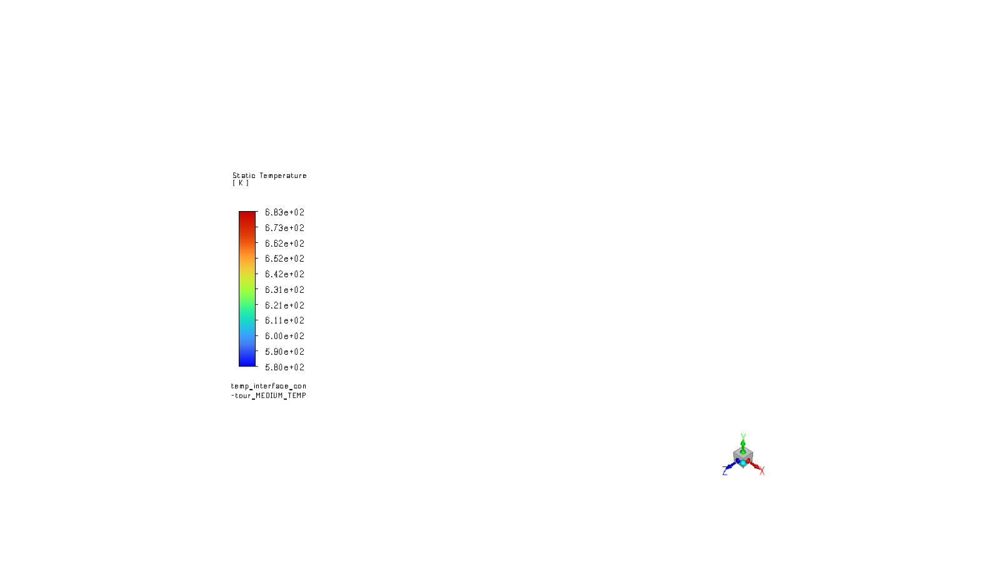
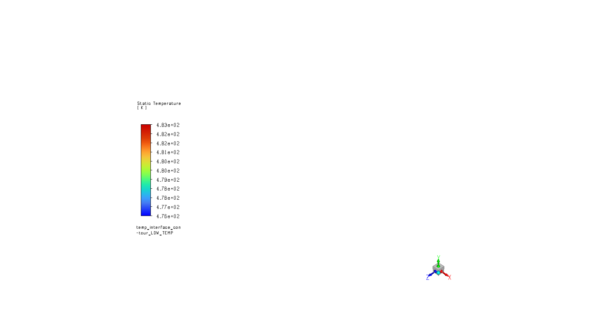

Note
Go to the end to download the full example code.
Conjugate Heat Transfer Workflow for Exhaust Manifold#
This workflow demonstrates the typical solver setup involved in performing a CFD simulation for the conjugate heat transfer (CHT) analysis of an exhaust manifold. A conjugate heat transfer analysis is a type of simulation that involves the simultaneous solution of heat transfer in both solid and fluid domains. In this case, the exhaust manifold is a solid domain, and the fluid domain is the gas flowing through the manifold. The heat transfer between the solid and fluid domains is modeled using the heat transfer coefficient (HTC) at the interface between the two domains. This workflow provides a step-by-step guide to set up a CHT analysis for an exhaust manifold using Ansys Fluent PyFluent APIs. The workflow includes usage of APIs to setup the physics, material properties, boundary conditions, solver settings, and exporting the results to a CSV file for further use in a Thermo-Mechanical Analysis.
Problem Description#
The geometry is an exhaust manifold with a fluid domain (gas) and a solid domain(metal) meshed with a conformal Polyhedral mesh.The hot gas flows through the manifold, and the heat is transferred to the solid domain. The objective is to calculate the heat transfer coefficient (HTC) at the interface between the fluid and solid domains, the temperature distribution in the solid domain, and export the results to a CSV file for further use in a Thermo-Mechanical Analysis.
The workflow includes the following steps: - Launch Fluent - Load the mesh file - Define the material properties - Define the boundary conditions - Define the solver settings - Initialize the solution - Run the solver - Export the results to CSV file - Close Fluent
This workflow will generate the following files as output: - exhaust_manifold_results_HIGH_TEMP.cas.h5 - exhaust_manifold_results_MEDIUM_TEMP.cas.h5 - exhaust_manifold_results_LOW_TEMP.cas.h5 - exhaust_manifold_results_HIGH_TEMP.dat.h5 - exhaust_manifold_results_MEDIUM_TEMP.dat.h5 - exhaust_manifold_results_LOW_TEMP.dat.h5 - htc_temp_mapping_HIGH_TEMP.csv - htc_temp_mapping_MEDIUM_TEMP.csv - htc_temp_mapping_LOW_TEMP.csv - Fluent transcript file (fluent-YYYYMMDD-HHMMSS-<processID>.trn)
# Perform required imports
# ------------------------
# Perform required imports, which includes downloading the mesh file from the
# examples.
import os
from pathlib import PurePosixPath
import ansys.fluent.core as pyfluent
from ansys.fluent.core import examples
from matplotlib import image as mpimg
from matplotlib import pyplot as plt
# Set to True to display the graphics
GRAPHICS_BOOL = False
# Output directory
WORKING_DIR = os.path.join(os.path.dirname(__file__), "outputs")
os.makedirs(WORKING_DIR, exist_ok=True)
import_mesh_file = examples.download_file(
file_name="exhaust_manifold_conf.msh.h5",
directory="pyansys-workflow/exhaust-manifold/pyfluent",
save_path=WORKING_DIR,
)
print(import_mesh_file)
/opt/hostedtoolcache/Python/3.12.9/x64/lib/python3.12/site-packages/ansys/fluent/core/examples/downloads.py:77: PyFluentUserWarning:
File already exists. File path:
/home/runner/work/pyansys-workflows/pyansys-workflows/fluent-mechanical/outputs/exhaust_manifold_conf.msh.h5
warnings.warn(
/home/runner/work/pyansys-workflows/pyansys-workflows/fluent-mechanical/outputs/exhaust_manifold_conf.msh.h5
Launch Fluent#
Launch Fluent as a service in solver mode with double precision running on four processors and print Fluent version.
if os.getenv("PYANSYS_WORKFLOWS_CI") == "true":
print("Configuring Fluent for CI")
container_dict = {
"mount_source": WORKING_DIR,
"timeout": 300,
}
solver = pyfluent.launch_fluent(
precision="double",
processor_count=4,
mode="solver",
container_dict=container_dict,
)
FLUENT_WORKING_DIR = "/mnt/pyfluent"
import_mesh_file = PurePosixPath(FLUENT_WORKING_DIR) / "exhaust_manifold_conf.msh.h5"
print(f"\nImport mesh path for container: {import_mesh_file}\n")
else:
solver = pyfluent.launch_fluent(
precision="double",
processor_count=4,
mode="solver",
cwd=WORKING_DIR,
)
print(solver.get_fluent_version())
print(f"Working directory: {WORKING_DIR}")
def display_image(work_dir, image_name):
plt.figure(figsize=(16, 9))
plt.imshow(mpimg.imread(os.path.join(work_dir, image_name)))
plt.xticks([])
plt.yticks([])
plt.axis("off")
plt.show()
Configuring Fluent for CI
pyfluent.launcher WARNING: Starting Fluent container mounted to /home/runner/work/pyansys-workflows/pyansys-workflows/fluent-mechanical/outputs, with this path available as /mnt/pyfluent for the Fluent session running inside the container.
Import mesh path for container: /mnt/pyfluent/exhaust_manifold_conf.msh.h5
Fluent version 2024 R2
Working directory: /home/runner/work/pyansys-workflows/pyansys-workflows/fluent-mechanical/outputs
Read the mesh file#
Read the mesh file into the Fluent solver and check the mesh information.
solver.settings.file.read_mesh(file_name=import_mesh_file)
solver.mesh.check()
Fast-loading "/ansys_inc/v242/fluent/fluent24.2.0/addons/afd/lib/hdfio.bin"
Done.
Reading from 60cca9a2c3cd:"/mnt/pyfluent/exhaust_manifold_conf.msh.h5" in NODE0 mode ...
Reading mesh ...
231020 cells, 2 cell zones ...
162106 polyhedra cells, zone id: 2199
68914 polyhedra cells, zone id: 2202
1435346 faces, 10 face zones ...
334717 polygonal interior faces, zone id: 2201
1037400 polygonal interior faces, zone id: 2198
8783 polygonal wall faces, zone id: 441
4519 polygonal wall faces, zone id: 41
1342 polygonal wall faces, zone id: 40
47317 polygonal wall faces, zone id: 38
330 polygonal pressure-outlet faces, zone id: 46
315 polygonal mass-flow-inlet faces, zone id: 45
312 polygonal mass-flow-inlet faces, zone id: 44
311 polygonal mass-flow-inlet faces, zone id: 43
1227270 nodes, 20 node zones ...
Building...
mesh
distributing mesh
parts....,
faces....,
nodes....,
cells....,
bandwidth reduction using Reverse Cuthill-McKee: 45512/3134 = 14.522
Reading boundary layer flags ...
Done.
materials,
interface,
domains,
zones,
interface_solid-shadow
Skipping thread 27 of domain 1 (not referenced by grid).
Skipping thread 28 of domain 1 (not referenced by grid).
Skipping thread 29 of domain 1 (not referenced by grid).
Skipping thread 30 of domain 1 (not referenced by grid).
Skipping thread 31 of domain 1 (not referenced by grid).
Skipping thread 32 of domain 1 (not referenced by grid).
Skipping thread 33 of domain 1 (not referenced by grid).
Skipping thread 34 of domain 1 (not referenced by grid).
Skipping thread 35 of domain 1 (not referenced by grid).
Skipping thread 36 of domain 1 (not referenced by grid).
Skipping thread 37 of domain 1 (not referenced by grid).
Skipping thread 22 of domain 1 (not referenced by grid).
Skipping thread 23 of domain 1 (not referenced by grid).
Skipping thread 24 of domain 1 (not referenced by grid).
Skipping thread 25 of domain 1 (not referenced by grid).
Skipping thread 60 of domain 1 (not referenced by grid).
Skipping thread 62 of domain 1 (not referenced by grid).
Skipping thread 64 of domain 1 (not referenced by grid).
Skipping thread 66 of domain 1 (not referenced by grid).
Skipping thread 68 of domain 1 (not referenced by grid).
Skipping thread 561 of domain 1 (not referenced by grid).
Skipping thread 563 of domain 1 (not referenced by grid).
Skipping thread 565 of domain 1 (not referenced by grid).
Skipping thread 567 of domain 1 (not referenced by grid).
Skipping thread 569 of domain 1 (not referenced by grid).
Skipping thread 570 of domain 1 (not referenced by grid).
Skipping thread 572 of domain 1 (not referenced by grid).
Skipping thread 574 of domain 1 (not referenced by grid).
Skipping thread 575 of domain 1 (not referenced by grid).
Skipping thread 577 of domain 1 (not referenced by grid).
interior--fluid
interior--solid
interface_solid
wall_outlet_bolts
wall_flange_bolts
solid:1
pressure_outlet
massflow_inlet3
massflow_inlet2
massflow_inlet1
fluid
solid
parallel,
Done.
Domain Extents:
x-coordinate: min (m) = -3.627150e-01, max (m) = 1.345894e-02
y-coordinate: min (m) = -1.250188e-01, max (m) = 9.445568e-08
z-coordinate: min (m) = -1.017994e-01, max (m) = 1.340498e-02
Volume statistics:
minimum volume (m3): 6.562917e-13
maximum volume (m3): 2.782639e-07
total volume (m3): 1.510818e-03
Face area statistics:
minimum face area (m2): 3.325352e-15
maximum face area (m2): 5.931152e-05
Checking mesh......................................
Done.
Define the Physics#
Define the physics of the problem by setting energy and turbulence models.
solver.settings.setup.models.energy.enabled = True
solver.settings.setup.models.viscous.model.allowed_values()
solver.settings.setup.models.viscous.model = "k-epsilon"
solver.settings.setup.models.viscous.k_epsilon_model = "realizable"
solver.settings.setup.models.viscous.near_wall_treatment.wall_treatment = "enhanced-wall-treatment"
Adjusting the following setting:
Changing Discretization Scheme for Turbulent Kinetic Energy: from: Second Order Upwind to: First Order Upwind
Define the Material Properties#
Define the material properties of the fluid, solid and assign the material to the appropriate cell zones.
# Fluid Material Properties
fluid_mat = solver.settings.setup.materials.fluid["air"]
fluid_mat.rename("fluid-material")
fluid_mat = solver.settings.setup.materials.fluid["fluid-material"]
fluid_mat.density.option = "ideal-gas"
fluid_mat.viscosity.value = 4.25e-05
fluid_mat.specific_heat.value = 1148
fluid_mat.thermal_conductivity.value = 0.0686
# Solid Material Properties
solid_mat = solver.settings.setup.materials.solid["aluminum"]
solid_mat.rename("solid-material")
solid_mat = solver.settings.setup.materials.solid["solid-material"]
solid_mat.density.value = 8030
solid_mat.specific_heat.value = 502.4
solid_mat.thermal_conductivity.value = 60.5
# Assign Material to Cell Zones
if solver.get_fluent_version() < pyfluent.FluentVersion.v242:
solver.settings.setup.cell_zone_conditions.fluid["fluid"].material = "fluid-material"
solver.settings.setup.materials.print_state()
solver.settings.setup.cell_zone_conditions.solid["solid"].material = "solid-material"
else:
solver.settings.setup.cell_zone_conditions.fluid["*fluid*"].general.material = "fluid-material"
solver.settings.setup.materials.print_state()
solver.settings.setup.cell_zone_conditions.solid["*solid*"].general.material = "solid-material"
# Print the material properties for verification
solver.settings.setup.materials.print_state()
database :
database_type : fluent-database
fluid :
fluid-material :
name : fluid-material
chemical_formula :
density :
option : ideal-gas
viscosity :
option : constant
value : 4.25e-05
specific_heat :
option : constant
value : 1148
thermal_conductivity :
option : constant
value : 0.0686
molecular_weight :
option : constant
value : 28.966
solid :
solid-material :
name : solid-material
chemical_formula : al
density :
option : constant
value : 8030
specific_heat :
option : constant
value : 502.4
thermal_conductivity :
option : constant
value : 60.5
database :
database_type : fluent-database
fluid :
fluid-material :
name : fluid-material
chemical_formula :
density :
option : ideal-gas
viscosity :
option : constant
value : 4.25e-05
specific_heat :
option : constant
value : 1148
thermal_conductivity :
option : constant
value : 0.0686
molecular_weight :
option : constant
value : 28.966
solid :
solid-material :
name : solid-material
chemical_formula : al
density :
option : constant
value : 8030
specific_heat :
option : constant
value : 502.4
thermal_conductivity :
option : constant
value : 60.5
Define the Named Expressions#
Define the named expressions for the boundary conditions.
solver.settings.setup.named_expressions.create("in_temperature")
solver.settings.setup.named_expressions["in_temperature"].definition = "1023.15 [K]"
solver.settings.setup.named_expressions["in_temperature"].input_parameter = True
solver.settings.setup.named_expressions.create("mass_flow_rate")
solver.settings.setup.named_expressions["mass_flow_rate"].definition = (
"abs((0.1559 [kg/s] *log(in_temperature/(1 [K^1])))-0.9759 [kg/s])"
)
solver.settings.setup.named_expressions.create("pressure_out")
solver.settings.setup.named_expressions["pressure_out"].definition = (
"(-0.3383 [Pa]*in_temperature^2/(1 [K^2]))+954.75 [Pa]*in_temperature/(1 [K])-356085 [Pa]"
)
solver.settings.setup.named_expressions.create("temperature_out")
solver.settings.setup.named_expressions["temperature_out"].definition = "in_temperature-23.00 [K]"
Define the Boundary Conditions#
Define the boundary conditions for the problem.
# Convection Boundary Condition
# Reference temperature for the convection boundary condition
ref_temp = 200 + 273.15
if solver.get_fluent_version() < pyfluent.FluentVersion.v242:
solver.settings.setup.boundary_conditions.wall["solid:1"].thermal.thermal_bc = "Convection"
solver.settings.setup.boundary_conditions.wall["solid:1"].thermal.h.value = 60
solver.settings.setup.boundary_conditions.wall["solid:1"].thermal.tinf.value = ref_temp
else:
solver.settings.setup.boundary_conditions.wall["solid:1"].thermal.thermal_condition = (
"Convection"
)
solver.settings.setup.boundary_conditions.wall["solid:1"].thermal.heat_transfer_coeff.value = 60
solver.settings.setup.boundary_conditions.wall["solid:1"].thermal.free_stream_temp.value = (
ref_temp
)
# Inlet Boundary Conditions
solver.settings.setup.boundary_conditions.mass_flow_inlet.list()
for inlet_bc in solver.settings.setup.boundary_conditions.mass_flow_inlet.keys():
solver.settings.setup.boundary_conditions.mass_flow_inlet[
inlet_bc
].momentum.mass_flow_rate.value = "mass_flow_rate"
solver.settings.setup.boundary_conditions.mass_flow_inlet[
inlet_bc
].thermal.total_temperature.value = "in_temperature"
# Outlet Boundary Conditions
solver.settings.setup.boundary_conditions.pressure_outlet.list()
solver.settings.setup.boundary_conditions.pressure_outlet[
"pressure_outlet"
].momentum.gauge_pressure.value = "pressure_out"
if solver.get_fluent_version() < pyfluent.FluentVersion.v242:
solver.settings.setup.boundary_conditions.pressure_outlet[
"pressure_outlet"
].thermal.t0.value = "temperature_out"
else:
solver.settings.setup.boundary_conditions.pressure_outlet[
"pressure_outlet"
].thermal.backflow_total_temperature.value = "temperature_out"
massflow_inlet1 massflow_inlet2 massflow_inlet3
Define the Solution Methods and Solver Settings#
Define the solution methods and solver settings for the problem.
# Solution Methods & controls
solver.settings.solution.methods.pseudo_time_method.formulation.coupled_solver = "off"
solver.settings.solution.controls.p_v_controls.flow_courant_number = 50
# Solver Settings initialization & set the iteration count
solver.settings.solution.initialization.hybrid_initialize()
solver.settings.solution.run_calculation.iter_count = 200
pressure_outlet
Initialize using the hybrid initialization method.
Checking case topology...
-This case has both inlets & outlets
-Pressure information is not available at the boundaries.
Case will be initialized with constant pressure
iter scalar-0
1 1.000000e+00
2 9.811110e-05
3 1.083635e-05
4 2.055257e-06
5 3.322166e-07
6 6.160584e-08
7 1.194993e-08
8 2.600210e-09
9 5.986052e-10
10 1.462859e-10
Hybrid initialization is done.
Run the Solver & Export the Results to CSV#
Run the solver to solve the problem and export the results to a CSV file. Define a tuple with temperature values
temperature_values = (
("HIGH_TEMP", 1023.15),
("MEDIUM_TEMP", 683.15),
("LOW_TEMP", 483.15),
)
# Retrieve fluid and solid zones
fluid_zones = list(solver.settings.setup.cell_zone_conditions.fluid.keys())
solid_zones = list(solver.settings.setup.cell_zone_conditions.solid.keys())
cell_zone_names = fluid_zones + solid_zones
# Iterate over the temperature values tuple
for temp_name, temp_value in temperature_values:
# Running the simulation for each temperature value with initialization and iteration
solver.solution.initialization.hybrid_initialize()
solver.settings.setup.named_expressions["in_temperature"].definition = f"{temp_value} [K]"
solver.solution.run_calculation.iterate(iter_count=200)
# Exporting Data for Thermo-Mechanical Simulation
mapping_file = f"htc_temp_mapping_{temp_name}.csv"
solver.settings.file.export.ascii(
file_name=mapping_file,
surface_name_list=["interface_solid"],
delimiter="comma",
cell_func_domain=["temperature", "heat-transfer-coef-wall"],
location="node",
)
# Export graphics result for the temperature distribution on interface_solid
temp_interface_contour = solver.settings.results.graphics.contour.create(
f"temp_interface_contour_{temp_name}"
)
temp_interface_contour(field="temperature", surfaces_list=["interface_solid"])
temp_interface_contour.display()
solver.settings.results.graphics.views.auto_scale()
solver.settings.results.graphics.picture.save_picture(
file_name=f"temp_interface_contour_{temp_name}.png"
)
solver.settings.file.write_case_data(file_name=f"exhaust_manifold_results_{temp_name}.cas.h5")
# Display the results
if GRAPHICS_BOOL:
for temp_name, temp_value in temperature_values:
display_image(WORKING_DIR, f"temp_interface_contour_{temp_name}.png")


Initialize using the hybrid initialization method.
Checking case topology...
-This case has both inlets & outlets
-Pressure information is not available at the boundaries.
Case will be initialized with constant pressure
iter scalar-0
1 1.000000e+00
2 9.811110e-05
3 1.083635e-05
4 2.055257e-06
5 3.322166e-07
6 6.160584e-08
7 1.194993e-08
8 2.600210e-09
9 5.986052e-10
10 1.462859e-10
Hybrid initialization is done.
iter continuity x-velocity y-velocity z-velocity energy k epsilon time/iter
1 1.0000e+00 4.2213e-03 5.7539e-03 5.9920e-04 8.8922e-05 1.1142e-01 2.4641e-01 0:04:04 199
2 1.0000e+00 2.2213e-03 3.0565e-03 3.5372e-04 1.1063e-04 7.7646e-02 1.7234e-01 0:03:55 198
3 9.2516e-01 1.1980e-03 1.6265e-03 2.3696e-04 5.2873e-05 5.9411e-02 1.2992e-01 0:03:48 197
4 7.6619e-01 6.9747e-04 8.7287e-04 1.6488e-04 3.0197e-05 4.7454e-02 1.1024e-01 0:03:37 196
5 6.2206e-01 4.4300e-04 4.7065e-04 1.2330e-04 2.1782e-05 3.8066e-02 9.7786e-02 0:03:28 195
6 5.0255e-01 3.3036e-04 3.0108e-04 1.0028e-04 1.6885e-05 3.0559e-02 8.3402e-02 0:03:20 194
7 4.0851e-01 2.6835e-04 2.1616e-04 8.8998e-05 1.3458e-05 2.4423e-02 6.6749e-02 0:03:15 193
8 3.3801e-01 2.2911e-04 1.7482e-04 8.3424e-05 1.0968e-05 1.9506e-02 5.1508e-02 0:03:09 192
9 2.8448e-01 2.0297e-04 1.5190e-04 7.9524e-05 9.0141e-06 1.5624e-02 4.0037e-02 0:03:06 191
10 2.4258e-01 1.8050e-04 1.3262e-04 7.6106e-05 7.4691e-06 1.2524e-02 3.1654e-02 0:03:03 190
11 2.0783e-01 1.6331e-04 1.1657e-04 7.2684e-05 6.3190e-06 1.0154e-02 2.5532e-02 0:03:00 189
iter continuity x-velocity y-velocity z-velocity energy k epsilon time/iter
12 1.7838e-01 1.4916e-04 1.0268e-04 6.9247e-05 5.4342e-06 8.4475e-03 2.1414e-02 0:02:57 188
13 1.5325e-01 1.3729e-04 9.0756e-05 6.5643e-05 4.7130e-06 7.2461e-03 1.8463e-02 0:02:55 187
14 1.3179e-01 1.2646e-04 8.0576e-05 6.1661e-05 4.1082e-06 6.3640e-03 1.6204e-02 0:02:53 186
15 1.1319e-01 1.1576e-04 7.1586e-05 5.7203e-05 3.5980e-06 5.6706e-03 1.4344e-02 0:02:51 185
16 9.7498e-02 1.0523e-04 6.3702e-05 5.2296e-05 3.1798e-06 5.0763e-03 1.2661e-02 0:02:49 184
17 8.4684e-02 9.4926e-05 5.6725e-05 4.7035e-05 2.8643e-06 4.5489e-03 1.1143e-02 0:02:48 183
18 7.4104e-02 8.4993e-05 5.0447e-05 4.1636e-05 2.6407e-06 4.0868e-03 9.7791e-03 0:02:46 182
19 6.5322e-02 7.5797e-05 4.4883e-05 3.6375e-05 2.4883e-06 3.7013e-03 8.5778e-03 0:02:45 181
20 5.8142e-02 6.7627e-05 3.9890e-05 3.1562e-05 2.3943e-06 3.4057e-03 7.5376e-03 0:02:44 180
21 5.2418e-02 6.0784e-05 3.5637e-05 2.7430e-05 2.3331e-06 3.1944e-03 6.6635e-03 0:02:43 179
22 4.7776e-02 5.5200e-05 3.1988e-05 2.4103e-05 2.2890e-06 3.0449e-03 5.9391e-03 0:02:42 178
iter continuity x-velocity y-velocity z-velocity energy k epsilon time/iter
23 4.4086e-02 5.0861e-05 2.8948e-05 2.1630e-05 2.2386e-06 2.9307e-03 5.3240e-03 0:02:41 177
24 4.1172e-02 4.7544e-05 2.6540e-05 1.9971e-05 2.1613e-06 2.8195e-03 4.7764e-03 0:02:40 176
25 3.8800e-02 4.5155e-05 2.4641e-05 1.9012e-05 2.0602e-06 2.6786e-03 4.2748e-03 0:02:39 175
26 3.6758e-02 4.3332e-05 2.3214e-05 1.8601e-05 1.9429e-06 2.5098e-03 3.8353e-03 0:02:37 174
27 3.4896e-02 4.1753e-05 2.2138e-05 1.8415e-05 1.8161e-06 2.3212e-03 3.4606e-03 0:02:36 173
28 3.2979e-02 4.0171e-05 2.1284e-05 1.8201e-05 1.6809e-06 2.1217e-03 3.1450e-03 0:02:36 172
29 3.0999e-02 3.8391e-05 2.0515e-05 1.7879e-05 1.5395e-06 1.9181e-03 2.8725e-03 0:02:34 171
30 2.8997e-02 3.6378e-05 1.9737e-05 1.7387e-05 1.3976e-06 1.7132e-03 2.6203e-03 0:02:33 170
31 2.7008e-02 3.4162e-05 1.8837e-05 1.6770e-05 1.2624e-06 1.5150e-03 2.3930e-03 0:02:32 169
32 2.4948e-02 3.1831e-05 1.7850e-05 1.5998e-05 1.1333e-06 1.3291e-03 2.1838e-03 0:02:31 168
33 2.2900e-02 2.9426e-05 1.6768e-05 1.5131e-05 1.0168e-06 1.1589e-03 1.9909e-03 0:02:30 167
iter continuity x-velocity y-velocity z-velocity energy k epsilon time/iter
34 2.0911e-02 2.7036e-05 1.5638e-05 1.4195e-05 9.0953e-07 1.0068e-03 1.8084e-03 0:02:29 166
35 1.9018e-02 2.4699e-05 1.4468e-05 1.3223e-05 8.1131e-07 8.7522e-04 1.6407e-03 0:02:28 165
36 1.7222e-02 2.2463e-05 1.3315e-05 1.2240e-05 7.2110e-07 7.6417e-04 1.4860e-03 0:02:28 164
37 1.5549e-02 2.0331e-05 1.2168e-05 1.1266e-05 6.3920e-07 6.7153e-04 1.3439e-03 0:02:27 163
38 1.4004e-02 1.8319e-05 1.1057e-05 1.0331e-05 5.6456e-07 5.9575e-04 1.2152e-03 0:02:26 162
39 1.2613e-02 1.6434e-05 9.9997e-06 9.4104e-06 4.9667e-07 5.3473e-04 1.0993e-03 0:02:25 161
40 1.1308e-02 1.4691e-05 9.0019e-06 8.5248e-06 4.3517e-07 4.8566e-04 9.9474e-04 0:02:24 160
41 1.0136e-02 1.3081e-05 8.0700e-06 7.6793e-06 3.8025e-07 4.4642e-04 9.0003e-04 0:02:23 159
42 9.0737e-03 1.1599e-05 7.2090e-06 6.8934e-06 3.3089e-07 4.1557e-04 8.1440e-04 0:02:23 158
43 8.0848e-03 1.0252e-05 6.4239e-06 6.1615e-06 2.8683e-07 3.9100e-04 7.3562e-04 0:02:22 157
44 7.1893e-03 9.0295e-06 5.7005e-06 5.4741e-06 2.4845e-07 3.7128e-04 6.6373e-04 0:02:21 156
iter continuity x-velocity y-velocity z-velocity energy k epsilon time/iter
45 6.3761e-03 7.9172e-06 5.0362e-06 4.8331e-06 2.1562e-07 3.5455e-04 5.9632e-04 0:02:20 155
46 5.6550e-03 6.9299e-06 4.4419e-06 4.2440e-06 1.8805e-07 3.3885e-04 5.3434e-04 0:02:19 154
47 5.0196e-03 6.0630e-06 3.9110e-06 3.7069e-06 1.6586e-07 3.2325e-04 4.7892e-04 0:02:18 153
48 4.4662e-03 5.3166e-06 3.4435e-06 3.2230e-06 1.4879e-07 3.0763e-04 4.2949e-04 0:02:17 152
49 3.9884e-03 4.6838e-06 3.0315e-06 2.7956e-06 1.3604e-07 2.9203e-04 3.8530e-04 0:02:16 151
50 3.5765e-03 4.1562e-06 2.6776e-06 2.4256e-06 1.2698e-07 2.7642e-04 3.4803e-04 0:02:15 150
51 3.2357e-03 3.7300e-06 2.3743e-06 2.1117e-06 1.2087e-07 2.6118e-04 3.1732e-04 0:02:14 149
52 2.9569e-03 3.3991e-06 2.1224e-06 1.8522e-06 1.1645e-07 2.4660e-04 2.9227e-04 0:02:13 148
53 2.7310e-03 3.1563e-06 1.9262e-06 1.6471e-06 1.1322e-07 2.3266e-04 2.7158e-04 0:02:13 147
54 2.5459e-03 2.9930e-06 1.7794e-06 1.4913e-06 1.1031e-07 2.1926e-04 2.5386e-04 0:02:11 146
55 2.4018e-03 2.8677e-06 1.6617e-06 1.3781e-06 1.0780e-07 2.0639e-04 2.3814e-04 0:02:10 145
iter continuity x-velocity y-velocity z-velocity energy k epsilon time/iter
56 2.2893e-03 2.7746e-06 1.5710e-06 1.3003e-06 1.0549e-07 1.9387e-04 2.2400e-04 0:02:09 144
57 2.2007e-03 2.6926e-06 1.4963e-06 1.2474e-06 1.0280e-07 1.8178e-04 2.1122e-04 0:02:09 143
58 2.1228e-03 2.6103e-06 1.4325e-06 1.2113e-06 9.9315e-08 1.7016e-04 1.9931e-04 0:02:08 142
59 2.0446e-03 2.5302e-06 1.3771e-06 1.1807e-06 9.5119e-08 1.5884e-04 1.8818e-04 0:02:07 141
60 1.9650e-03 2.4397e-06 1.3213e-06 1.1478e-06 9.0975e-08 1.4788e-04 1.7777e-04 0:02:14 140
61 1.8834e-03 2.3400e-06 1.2681e-06 1.1131e-06 8.6683e-08 1.3729e-04 1.6785e-04 0:02:12 139
62 1.7960e-03 2.2362e-06 1.2158e-06 1.0741e-06 8.2041e-08 1.2697e-04 1.5819e-04 0:02:09 138
63 1.7088e-03 2.1222e-06 1.1591e-06 1.0326e-06 7.7596e-08 1.1718e-04 1.4877e-04 0:02:07 137
64 1.6201e-03 2.0162e-06 1.1063e-06 9.9011e-07 7.2864e-08 1.0788e-04 1.3966e-04 0:02:05 136
65 1.5293e-03 1.9115e-06 1.0514e-06 9.4743e-07 6.8107e-08 9.8926e-05 1.3068e-04 0:02:04 135
66 1.4384e-03 1.8044e-06 9.9415e-07 9.0414e-07 6.3639e-08 9.0545e-05 1.2213e-04 0:02:03 134
iter continuity x-velocity y-velocity z-velocity energy k epsilon time/iter
67 1.3458e-03 1.7045e-06 9.4115e-07 8.6172e-07 5.9005e-08 8.2584e-05 1.1369e-04 0:02:01 133
68 1.2550e-03 1.6042e-06 8.8610e-07 8.1887e-07 5.4537e-08 7.5051e-05 1.0540e-04 0:02:00 132
69 1.1681e-03 1.5048e-06 8.3058e-07 7.7611e-07 5.0263e-08 6.7957e-05 9.7332e-05 0:01:59 131
70 1.0837e-03 1.4068e-06 7.7688e-07 7.3378e-07 4.6201e-08 6.1357e-05 8.9556e-05 0:01:58 130
71 1.0010e-03 1.3138e-06 7.2748e-07 6.9138e-07 4.2122e-08 5.5125e-05 8.2046e-05 0:01:56 129
72 9.2190e-04 1.2200e-06 6.7562e-07 6.4829e-07 3.8361e-08 4.9351e-05 7.4909e-05 0:01:56 128
! 72 solution is converged
Writing "htc_temp_mapping_HIGH_TEMP.csv"...
Writing information to ascii file ...
Done.
Writing to 60cca9a2c3cd:"/mnt/pyfluent/exhaust_manifold_results_HIGH_TEMP.cas.h5" in NODE0 mode and compression level 1 ...
Grouping cells for Laplace smoothing ...
Done. 231020 cells, 2 zones ...
1444129 faces, 11 zones ...
1168370 nodes, 1 zone ...
Done.
Writing boundary layer flags ...
Done.
Done.
Writing to 60cca9a2c3cd:"/mnt/pyfluent/exhaust_manifold_results_HIGH_TEMP.dat.h5" in NODE0 mode and compression level 1 ...
Writing results.
Done.
Initialize using the hybrid initialization method.
Checking case topology...
-This case has both inlets & outlets
-Pressure information is not available at the boundaries.
Case will be initialized with constant pressure
iter scalar-0
1 1.000000e+00
2 9.811110e-05
3 1.083635e-05
4 2.055257e-06
5 3.322166e-07
6 6.160584e-08
7 1.194993e-08
8 2.600210e-09
9 5.986052e-10
10 1.462859e-10
Hybrid initialization is done.
iter continuity x-velocity y-velocity z-velocity energy k epsilon time/iter
1 1.0000e+00 4.2213e-03 5.7539e-03 5.9920e-04 7.6237e-04 1.0540e-01 2.2605e-01 0:03:08 199
2 1.0000e+00 3.2863e-03 4.4795e-02 1.6918e-03 7.9054e-04 2.4875e-01 2.9374e-01 0:03:10 198
3 7.9929e-01 2.1567e-03 5.8785e-02 1.6005e-03 6.0765e-04 4.6241e-01 3.7264e-01 0:03:10 197
Reversed flow on 6 faces (4.8% area) of pressure-outlet 46.
4 8.1991e-01 2.4646e-03 5.4933e-02 1.7918e-03 4.3288e-04 1.9633e+00 1.0843e+00 0:03:06 196
Reversed flow on 27 faces (20.4% area) of pressure-outlet 46.
5 4.7457e-01 6.3918e-03 5.1361e-02 6.1303e-03 5.0196e-04 8.4114e-01 5.5911e-01 0:03:03 195
Reversed flow on 50 faces (26.8% area) of pressure-outlet 46.
6 2.7651e-01 8.0531e-03 2.8489e-02 9.4479e-03 8.1957e-04 2.3151e-01 2.5535e-01 0:03:00 194
turbulent viscosity limited to viscosity ratio of 1.000000e+05 in 1 cells
Reversed flow on 60 faces (33.0% area) of pressure-outlet 46.
7 1.7869e-01 9.2513e-03 3.1533e-02 1.0809e-02 6.7724e-04 1.1810e-01 1.5333e-01 0:02:57 193
turbulent viscosity limited to viscosity ratio of 1.000000e+05 in 3 cells
Reversed flow on 48 faces (29.0% area) of pressure-outlet 46.
8 1.0205e-01 6.4619e-03 1.5505e-02 8.0578e-03 3.1494e-04 5.0361e-02 9.9832e-02 0:02:56 192
turbulent viscosity limited to viscosity ratio of 1.000000e+05 in 2 cells
Reversed flow on 32 faces (21.3% area) of pressure-outlet 46.
9 6.4405e-02 4.3048e-03 9.4225e-03 5.1804e-03 1.8625e-04 3.4237e-02 6.9570e-02 0:02:59 191
Reversed flow on 18 faces (11.8% area) of pressure-outlet 46.
10 4.3417e-02 2.9426e-03 7.1820e-03 3.3653e-03 1.0504e-04 2.6781e-02 5.2443e-02 0:03:01 190
Reversed flow on 13 faces (7.8% area) of pressure-outlet 46.
11 3.0684e-02 2.1309e-03 5.1812e-03 2.3362e-03 6.5253e-05 2.1824e-02 3.9188e-02 0:03:07 189
Reversed flow on 7 faces (4.5% area) of pressure-outlet 46.
iter continuity x-velocity y-velocity z-velocity energy k epsilon time/iter
12 2.2544e-02 1.6202e-03 3.5309e-03 1.6924e-03 4.7425e-05 1.8106e-02 2.9702e-02 0:03:26 188
Reversed flow on 2 faces (0.8% area) of pressure-outlet 46.
13 1.7035e-02 1.2463e-03 2.4050e-03 1.3132e-03 3.3242e-05 1.5662e-02 2.3249e-02 0:03:44 187
14 1.3110e-02 9.6369e-04 1.6268e-03 1.0252e-03 2.4271e-05 1.3964e-02 1.8813e-02 0:03:40 186
15 1.0182e-02 7.5511e-04 1.1461e-03 8.0808e-04 1.9873e-05 1.3072e-02 1.5682e-02 0:03:37 185
16 8.0395e-03 5.8450e-04 8.6564e-04 6.2756e-04 1.6824e-05 1.2569e-02 1.3414e-02 0:03:30 184
17 6.3989e-03 4.6233e-04 6.8998e-04 4.8980e-04 1.5530e-05 1.2387e-02 1.1889e-02 0:03:29 183
18 5.1718e-03 3.7124e-04 5.6623e-04 3.8740e-04 1.4081e-05 1.2372e-02 1.1263e-02 0:03:19 182
19 4.2167e-03 3.0313e-04 4.6713e-04 3.1107e-04 1.2599e-05 1.2390e-02 1.1476e-02 0:03:12 181
20 3.5350e-03 2.5349e-04 3.8886e-04 2.5236e-04 1.1035e-05 1.2476e-02 1.2158e-02 0:03:06 180
21 2.9919e-03 2.1495e-04 3.2582e-04 2.0726e-04 9.6401e-06 1.2593e-02 1.3170e-02 0:03:01 179
22 2.5436e-03 1.8179e-04 2.6858e-04 1.7006e-04 8.3498e-06 1.2690e-02 1.4330e-02 0:02:56 178
iter continuity x-velocity y-velocity z-velocity energy k epsilon time/iter
23 2.1719e-03 1.5581e-04 2.2228e-04 1.4022e-04 7.3855e-06 1.2800e-02 1.5509e-02 0:02:52 177
24 1.8774e-03 1.3522e-04 1.8558e-04 1.1584e-04 6.2471e-06 1.2889e-02 1.6630e-02 0:02:49 176
25 1.6330e-03 1.1737e-04 1.5455e-04 9.6185e-05 5.1332e-06 1.2940e-02 1.7624e-02 0:02:46 175
26 1.4158e-03 1.0266e-04 1.2881e-04 8.1667e-05 4.4020e-06 1.2977e-02 1.8451e-02 0:02:43 174
27 1.2391e-03 9.1151e-05 1.1056e-04 6.9499e-05 4.1037e-06 1.2998e-02 1.9138e-02 0:02:41 173
28 1.1023e-03 8.3693e-05 9.8828e-05 6.0850e-05 3.5187e-06 1.3014e-02 1.9687e-02 0:02:40 172
29 9.8814e-04 7.8187e-05 9.0791e-05 5.3126e-05 2.9233e-06 1.3001e-02 2.0090e-02 0:02:38 171
30 9.0585e-04 7.4972e-05 8.5116e-05 4.7520e-05 2.6526e-06 1.2979e-02 2.0383e-02 0:02:37 170
31 8.3385e-04 7.2153e-05 8.2123e-05 4.1373e-05 2.5243e-06 1.2918e-02 2.0579e-02 0:02:35 169
32 7.8217e-04 7.0259e-05 8.0666e-05 3.8476e-05 2.4900e-06 1.2829e-02 2.0721e-02 0:02:34 168
33 7.4618e-04 6.9267e-05 8.1328e-05 3.5314e-05 2.5375e-06 1.2700e-02 2.0783e-02 0:02:34 167
iter continuity x-velocity y-velocity z-velocity energy k epsilon time/iter
34 7.2079e-04 6.8361e-05 8.2946e-05 3.4173e-05 2.6960e-06 1.2529e-02 2.0650e-02 0:02:33 166
35 6.9718e-04 6.7980e-05 8.4994e-05 3.2992e-05 2.8755e-06 1.2295e-02 2.0237e-02 0:02:32 165
36 6.7321e-04 6.6361e-05 8.6081e-05 3.2369e-05 2.9494e-06 1.2058e-02 1.9582e-02 0:02:31 164
37 6.3789e-04 6.6645e-05 8.5803e-05 3.2082e-05 2.9435e-06 1.1795e-02 1.8723e-02 0:02:30 163
38 6.0244e-04 6.5057e-05 8.4765e-05 3.1445e-05 2.8556e-06 1.1612e-02 1.7888e-02 0:02:29 162
39 5.6610e-04 6.5354e-05 8.3036e-05 3.1525e-05 2.7957e-06 1.1432e-02 1.7063e-02 0:02:28 161
40 5.4351e-04 6.3915e-05 8.0975e-05 3.1231e-05 2.7463e-06 1.1353e-02 1.6403e-02 0:02:27 160
41 5.1578e-04 6.4256e-05 7.8936e-05 3.1477e-05 2.7185e-06 1.1280e-02 1.5840e-02 0:02:26 159
42 4.9943e-04 6.2858e-05 7.7704e-05 3.1001e-05 2.6860e-06 1.1312e-02 1.5491e-02 0:02:26 158
43 4.7545e-04 6.3500e-05 7.6346e-05 3.0962e-05 2.6943e-06 1.1332e-02 1.5218e-02 0:02:25 157
44 4.6550e-04 6.2488e-05 7.5435e-05 3.0734e-05 2.7698e-06 1.1437e-02 1.5101e-02 0:02:24 156
iter continuity x-velocity y-velocity z-velocity energy k epsilon time/iter
45 4.4856e-04 6.3286e-05 7.4432e-05 3.1277e-05 2.8232e-06 1.1523e-02 1.5028e-02 0:02:23 155
46 4.4264e-04 6.2466e-05 7.3711e-05 3.1624e-05 2.8920e-06 1.1682e-02 1.5093e-02 0:02:22 154
47 4.3117e-04 6.3106e-05 7.2765e-05 3.2345e-05 2.9365e-06 1.1823e-02 1.5145e-02 0:02:21 153
48 4.2165e-04 6.2218e-05 7.1667e-05 3.2715e-05 2.9530e-06 1.2026e-02 1.5294e-02 0:02:20 152
49 4.0817e-04 6.2427e-05 7.0050e-05 3.3306e-05 2.9187e-06 1.2216e-02 1.5477e-02 0:02:19 151
50 3.9702e-04 6.1699e-05 6.8266e-05 3.3679e-05 2.9709e-06 1.2464e-02 1.5730e-02 0:02:18 150
51 3.8841e-04 6.2137e-05 6.6377e-05 3.4527e-05 3.0274e-06 1.2712e-02 1.5997e-02 0:02:18 149
52 3.8421e-04 6.1632e-05 6.4667e-05 3.5241e-05 3.0823e-06 1.3015e-02 1.6381e-02 0:02:18 148
53 3.7608e-04 6.1632e-05 6.2829e-05 3.5984e-05 3.1224e-06 1.3329e-02 1.6775e-02 0:02:17 147
54 3.7530e-04 6.1662e-05 6.1506e-05 3.6544e-05 3.2063e-06 1.3693e-02 1.7174e-02 0:02:15 146
55 3.6836e-04 6.1622e-05 6.0120e-05 3.6987e-05 3.2244e-06 1.4068e-02 1.7633e-02 0:02:16 145
iter continuity x-velocity y-velocity z-velocity energy k epsilon time/iter
56 3.6141e-04 6.1186e-05 5.9050e-05 3.7265e-05 3.2750e-06 1.4483e-02 1.8220e-02 0:02:14 144
57 3.5390e-04 6.1210e-05 5.8551e-05 3.7831e-05 3.3489e-06 1.4932e-02 1.8860e-02 0:02:13 143
58 3.5079e-04 6.1421e-05 5.8627e-05 3.8429e-05 3.4185e-06 1.5433e-02 1.9364e-02 0:02:12 142
59 3.5075e-04 6.0937e-05 5.8503e-05 3.8830e-05 3.4273e-06 1.5952e-02 2.0160e-02 0:02:11 141
60 3.4963e-04 6.0554e-05 5.8539e-05 3.9146e-05 3.4827e-06 1.6507e-02 2.1129e-02 0:02:09 140
61 3.4863e-04 6.0620e-05 5.9315e-05 3.9715e-05 3.5808e-06 1.7123e-02 2.1721e-02 0:02:08 139
62 3.5214e-04 6.0120e-05 6.0553e-05 4.0232e-05 3.6339e-06 1.7775e-02 2.2802e-02 0:02:07 138
63 3.5202e-04 5.8983e-05 6.1275e-05 4.0231e-05 3.6212e-06 1.8442e-02 2.3842e-02 0:02:06 137
64 3.4695e-04 5.8145e-05 6.2549e-05 4.0788e-05 3.7122e-06 1.9171e-02 2.4650e-02 0:02:05 136
65 3.4355e-04 5.6954e-05 6.3274e-05 4.0772e-05 3.7060e-06 1.9913e-02 2.5908e-02 0:02:04 135
66 3.3913e-04 5.5539e-05 6.3967e-05 4.0463e-05 3.6911e-06 2.0694e-02 2.7021e-02 0:02:03 134
iter continuity x-velocity y-velocity z-velocity energy k epsilon time/iter
67 3.3364e-04 5.3970e-05 6.4678e-05 4.0417e-05 3.7235e-06 2.1519e-02 2.8062e-02 0:02:03 133
68 3.2874e-04 5.1772e-05 6.4245e-05 3.9638e-05 3.6411e-06 2.2304e-02 2.9878e-02 0:02:02 132
69 3.2632e-04 4.9605e-05 6.4451e-05 3.9166e-05 3.6185e-06 2.3119e-02 3.1268e-02 0:02:01 131
70 3.2311e-04 4.7104e-05 6.3860e-05 3.8355e-05 3.5302e-06 2.3930e-02 3.2907e-02 0:02:00 130
71 3.1725e-04 4.4398e-05 6.2254e-05 3.6970e-05 3.3620e-06 2.4676e-02 3.4390e-02 0:01:59 129
72 3.1130e-04 4.1322e-05 6.0569e-05 3.5809e-05 3.2676e-06 2.5410e-02 3.6655e-02 0:01:58 128
73 2.9695e-04 3.8033e-05 5.7437e-05 3.3361e-05 2.9862e-06 2.5996e-02 3.7237e-02 0:01:57 127
74 2.7888e-04 3.5361e-05 5.5016e-05 3.1952e-05 2.8922e-06 2.6909e-02 4.0410e-02 0:01:56 126
75 2.6133e-04 3.2754e-05 5.1381e-05 2.9346e-05 2.5387e-06 2.7585e-02 4.1499e-02 0:01:55 125
76 2.4558e-04 3.0014e-05 4.7541e-05 2.6795e-05 2.2743e-06 2.8033e-02 4.4152e-02 0:01:54 124
77 2.3028e-04 2.7211e-05 4.3410e-05 2.4035e-05 2.0134e-06 2.8219e-02 4.7527e-02 0:01:53 123
iter continuity x-velocity y-velocity z-velocity energy k epsilon time/iter
78 2.1201e-04 2.4242e-05 3.8407e-05 2.0914e-05 1.6555e-06 2.7983e-02 4.8731e-02 0:01:52 122
79 1.9110e-04 2.1336e-05 3.3495e-05 1.8175e-05 1.3598e-06 2.7649e-02 4.9730e-02 0:01:51 121
80 1.6676e-04 1.8559e-05 2.8734e-05 1.5472e-05 1.0800e-06 2.7012e-02 5.3278e-02 0:01:50 120
81 1.4443e-04 1.5969e-05 2.4951e-05 1.3362e-05 9.0395e-07 2.6098e-02 5.3965e-02 0:01:49 119
82 1.2258e-04 1.3734e-05 2.1723e-05 1.1611e-05 7.5895e-07 2.4402e-02 5.6085e-02 0:01:48 118
83 1.0419e-04 1.1831e-05 1.9145e-05 1.0233e-05 6.6949e-07 2.1805e-02 5.4559e-02 0:01:47 117
84 9.0071e-05 1.0135e-05 1.6911e-05 8.9494e-06 5.7024e-07 1.8311e-02 5.0145e-02 0:01:46 116
85 7.7760e-05 8.5866e-06 1.4676e-05 7.6806e-06 4.7923e-07 1.4456e-02 4.3310e-02 0:01:45 115
86 6.8274e-05 7.3025e-06 1.2692e-05 6.5682e-06 3.9404e-07 1.0741e-02 3.5207e-02 0:01:44 114
87 6.0015e-05 6.1661e-06 1.0798e-05 5.5313e-06 3.1646e-07 7.3806e-03 2.6531e-02 0:01:43 113
88 5.3626e-05 5.1414e-06 8.8938e-06 4.5174e-06 2.3848e-07 4.5975e-03 1.8743e-02 0:01:42 112
iter continuity x-velocity y-velocity z-velocity energy k epsilon time/iter
89 4.7115e-05 4.0359e-06 7.0137e-06 3.5305e-06 1.6331e-07 2.4422e-03 1.2604e-02 0:01:41 111
90 4.0179e-05 3.0548e-06 5.3267e-06 2.6368e-06 1.0047e-07 1.0570e-03 5.9510e-03 0:01:40 110
91 3.2552e-05 2.2620e-06 3.8821e-06 1.8961e-06 5.7021e-08 4.0591e-04 2.3988e-03 0:01:39 109
92 2.5634e-05 1.6484e-06 2.7342e-06 1.3346e-06 3.1013e-08 1.5684e-04 9.9785e-04 0:01:38 108
! 92 solution is converged
Writing "htc_temp_mapping_MEDIUM_TEMP.csv"...
Writing information to ascii file ...
Done.
Writing to 60cca9a2c3cd:"/mnt/pyfluent/exhaust_manifold_results_MEDIUM_TEMP.cas.h5" in NODE0 mode and compression level 1 ...
Grouping cells for Laplace smoothing ...
231020 cells, 2 zones ...
1444129 faces, 11 zones ...
1168370 nodes, 1 zone ...
Done.
Writing boundary layer flags ...
Done.
Done.
Writing to 60cca9a2c3cd:"/mnt/pyfluent/exhaust_manifold_results_MEDIUM_TEMP.dat.h5" in NODE0 mode and compression level 1 ...
Writing results.
Done.
Initialize using the hybrid initialization method.
Checking case topology...
-This case has both inlets & outlets
-Pressure information is not available at the boundaries.
Case will be initialized with constant pressure
iter scalar-0
1 1.000000e+00
2 9.811110e-05
3 1.083635e-05
4 2.055257e-06
5 3.322166e-07
6 6.160583e-08
7 1.194992e-08
8 2.600209e-09
9 5.986052e-10
10 1.462858e-10
Hybrid initialization is done.
iter continuity x-velocity y-velocity z-velocity energy k epsilon time/iter
1 1.0000e+00 4.3650e-03 5.9452e-03 6.1816e-04 3.1747e-04 1.0282e-01 2.4316e-01 0:03:09 199
2 1.0000e+00 8.2990e-03 2.1828e-01 7.4854e-03 1.5311e-03 5.0719e+00 1.9310e+00 0:03:11 198
Reversed flow on 3 faces (2.9% area) of pressure-outlet 46.
3 2.7467e-01 8.5313e-03 6.2302e-02 8.7789e-03 5.9637e-04 3.0409e-01 2.8442e+00 0:03:15 197
Reversed flow on 4 faces (1.0% area) of pressure-outlet 46.
4 2.3462e-01 4.7006e-03 3.1666e-02 3.8101e-03 1.1743e-03 2.6124e-01 1.1259e+00 0:03:11 196
Reversed flow on 217 faces (24.9% area) of pressure-outlet 46.
5 1.6976e-01 9.6235e-03 5.5968e-02 9.6941e-03 7.1723e-04 1.2413e-01 3.9073e-01 0:03:16 195
Reversed flow on 190 faces (22.5% area) of pressure-outlet 46.
6 1.5396e-01 4.9840e-03 3.6440e-02 4.9773e-03 3.4447e-04 4.3701e-01 2.0579e-01 0:03:11 194
turbulent viscosity limited to viscosity ratio of 1.000000e+05 in 1 cells
Reversed flow on 34 faces (3.4% area) of pressure-outlet 46.
7 1.2134e-01 5.1047e-03 3.2302e-02 4.9723e-03 1.9029e-04 1.5578e-01 1.3232e-01 0:03:07 193
turbulent viscosity limited to viscosity ratio of 1.000000e+05 in 4 cells
Reversed flow on 28 faces (2.9% area) of pressure-outlet 46.
8 8.4123e-02 3.9591e-03 1.7653e-02 3.8316e-03 1.4703e-04 1.0253e-01 8.7634e-02 0:03:04 192
turbulent viscosity limited to viscosity ratio of 1.000000e+05 in 1 cells
Reversed flow on 41 faces (4.1% area) of pressure-outlet 46.
9 5.9976e-02 3.5289e-03 1.3344e-02 3.4000e-03 6.7852e-05 7.1120e-02 7.1239e-02 0:03:05 191
Reversed flow on 42 faces (4.0% area) of pressure-outlet 46.
10 4.5410e-02 2.9490e-03 1.0303e-02 2.8781e-03 3.9249e-05 4.4677e-02 5.6715e-02 0:03:02 190
Reversed flow on 36 faces (3.3% area) of pressure-outlet 46.
11 3.5755e-02 2.5315e-03 8.3027e-03 2.5045e-03 2.4312e-05 3.0158e-02 4.1749e-02 0:03:12 189
Reversed flow on 19 faces (1.6% area) of pressure-outlet 46.
iter continuity x-velocity y-velocity z-velocity energy k epsilon time/iter
12 2.6413e-02 1.9819e-03 5.6445e-03 1.8967e-03 1.5252e-05 2.0833e-02 3.2136e-02 0:03:16 188
Reversed flow on 9 faces (0.7% area) of pressure-outlet 46.
13 1.9050e-02 1.3689e-03 3.7090e-03 1.2781e-03 9.2374e-06 1.6422e-02 2.9473e-02 0:03:14 187
Reversed flow on 2 faces (0.2% area) of pressure-outlet 46.
14 1.3392e-02 1.1270e-03 2.7642e-03 1.0056e-03 6.0265e-06 1.3690e-02 2.4501e-02 0:03:11 186
15 9.4437e-03 9.6221e-04 2.2644e-03 8.5039e-04 4.0345e-06 1.1735e-02 2.1012e-02 0:03:11 185
16 6.8203e-03 8.2754e-04 1.9198e-03 7.4236e-04 2.7599e-06 1.0363e-02 1.7601e-02 0:03:14 184
17 5.0227e-03 7.1088e-04 1.5851e-03 6.3480e-04 2.1808e-06 9.3315e-03 1.5272e-02 0:03:12 183
18 3.7592e-03 6.1428e-04 1.3377e-03 5.4138e-04 1.7955e-06 8.5848e-03 1.3323e-02 0:03:19 182
19 2.9041e-03 5.1691e-04 1.0994e-03 4.4637e-04 1.5178e-06 7.9822e-03 1.1701e-02 0:03:16 181
20 2.2844e-03 4.4382e-04 9.4102e-04 3.6938e-04 1.2440e-06 7.4687e-03 1.0053e-02 0:03:09 180
21 1.8342e-03 3.7620e-04 7.8736e-04 2.9861e-04 1.0047e-06 7.0124e-03 8.8133e-03 0:03:02 179
22 1.5003e-03 3.1962e-04 6.5660e-04 2.4292e-04 8.5567e-07 6.6082e-03 7.7470e-03 0:03:02 178
iter continuity x-velocity y-velocity z-velocity energy k epsilon time/iter
23 1.2351e-03 2.8434e-04 5.5685e-04 2.0581e-04 7.3944e-07 6.2470e-03 7.0650e-03 0:03:05 177
24 1.0843e-03 2.4720e-04 4.6908e-04 1.7170e-04 6.3998e-07 5.9319e-03 6.6440e-03 0:03:15 176
25 9.5280e-04 2.2071e-04 3.8143e-04 1.5759e-04 5.5385e-07 5.6355e-03 6.6412e-03 0:03:31 175
26 8.7099e-04 1.9858e-04 2.9780e-04 1.4799e-04 5.1464e-07 5.3692e-03 6.8699e-03 0:03:32 174
27 7.9153e-04 1.8109e-04 2.2922e-04 1.4058e-04 4.5975e-07 5.1031e-03 7.2385e-03 0:03:27 173
28 7.2703e-04 1.7232e-04 1.7688e-04 1.4988e-04 4.3296e-07 4.8617e-03 7.6392e-03 0:03:24 172
29 6.6867e-04 1.6369e-04 1.4732e-04 1.5052e-04 4.0249e-07 4.6325e-03 8.0386e-03 0:03:17 171
30 6.2054e-04 1.5975e-04 1.3368e-04 1.4900e-04 3.6175e-07 4.4141e-03 8.2178e-03 0:03:12 170
31 5.6998e-04 1.5321e-04 1.2360e-04 1.5022e-04 3.2780e-07 4.1817e-03 8.2511e-03 0:03:03 169
32 5.3384e-04 1.4775e-04 1.1641e-04 1.4618e-04 2.9851e-07 3.9774e-03 8.2106e-03 0:02:56 168
33 4.9973e-04 1.4759e-04 1.1274e-04 1.4881e-04 2.8338e-07 3.7730e-03 8.0906e-03 0:02:50 167
iter continuity x-velocity y-velocity z-velocity energy k epsilon time/iter
34 4.7571e-04 1.4563e-04 1.0717e-04 1.4661e-04 2.5740e-07 3.5925e-03 7.8129e-03 0:02:56 166
35 4.5965e-04 1.4582e-04 1.0439e-04 1.5882e-04 2.2656e-07 3.4119e-03 7.4176e-03 0:02:50 165
36 4.4763e-04 1.4835e-04 9.8408e-05 1.4862e-04 2.1315e-07 3.2713e-03 7.0190e-03 0:02:45 164
37 4.1797e-04 1.4782e-04 9.3551e-05 1.5466e-04 1.9183e-07 3.1324e-03 6.6171e-03 0:02:40 163
38 4.1031e-04 1.3980e-04 8.9616e-05 1.4842e-04 1.6816e-07 3.0333e-03 6.2410e-03 0:02:37 162
39 4.0653e-04 1.4269e-04 8.8100e-05 1.5860e-04 1.5130e-07 2.9393e-03 5.8765e-03 0:02:33 161
40 3.9561e-04 1.4445e-04 8.3382e-05 1.6026e-04 1.3752e-07 2.8713e-03 5.5897e-03 0:02:31 160
41 3.8306e-04 1.4064e-04 7.9693e-05 1.5593e-04 1.2458e-07 2.8041e-03 5.2985e-03 0:02:28 159
42 3.8369e-04 1.4279e-04 7.7312e-05 1.5712e-04 1.1344e-07 2.7524e-03 5.0573e-03 0:02:27 158
43 3.7767e-04 1.5309e-04 7.5989e-05 1.5737e-04 1.0415e-07 2.7059e-03 4.8315e-03 0:02:25 157
44 3.6430e-04 1.4253e-04 7.1581e-05 1.5690e-04 9.5217e-08 2.6750e-03 4.6480e-03 0:02:23 156
iter continuity x-velocity y-velocity z-velocity energy k epsilon time/iter
45 3.5324e-04 1.4464e-04 6.9795e-05 1.5451e-04 8.7101e-08 2.6395e-03 4.4577e-03 0:02:22 155
46 3.4708e-04 1.4186e-04 6.7263e-05 1.5751e-04 7.9593e-08 2.6237e-03 4.3087e-03 0:02:20 154
47 3.3130e-04 1.4116e-04 6.6144e-05 1.5111e-04 7.4843e-08 2.5963e-03 4.1489e-03 0:02:19 153
48 3.3129e-04 1.4154e-04 6.5824e-05 1.4963e-04 7.2351e-08 2.5925e-03 4.0430e-03 0:02:18 152
49 3.2517e-04 1.4980e-04 6.4807e-05 1.4997e-04 7.1429e-08 2.5780e-03 3.9168e-03 0:02:14 151
50 3.2862e-04 1.4806e-04 6.5152e-05 1.5627e-04 7.3425e-08 2.5807e-03 3.8313e-03 0:02:13 150
51 3.2137e-04 1.4741e-04 6.5730e-05 1.5125e-04 7.1242e-08 2.5796e-03 3.7301e-03 0:02:10 149
52 3.1366e-04 1.4546e-04 6.2772e-05 1.4596e-04 7.4504e-08 2.5852e-03 3.6643e-03 0:02:10 148
53 3.0951e-04 1.5098e-04 6.4638e-05 1.5292e-04 7.3723e-08 2.5834e-03 3.5846e-03 0:02:06 147
54 3.1647e-04 1.5148e-04 6.5359e-05 1.4854e-04 7.6765e-08 2.5982e-03 3.5355e-03 0:02:07 146
55 3.0113e-04 1.5294e-04 6.4307e-05 1.4104e-04 7.6445e-08 2.5992e-03 3.4721e-03 0:02:04 145
iter continuity x-velocity y-velocity z-velocity energy k epsilon time/iter
56 3.0383e-04 1.4793e-04 6.3178e-05 1.4311e-04 8.0896e-08 2.6145e-03 3.4399e-03 0:02:04 144
57 3.0838e-04 1.5769e-04 6.4849e-05 1.4587e-04 8.2245e-08 2.6218e-03 3.3992e-03 0:02:01 143
58 3.0670e-04 1.5241e-04 6.2542e-05 1.4018e-04 8.7172e-08 2.6416e-03 3.3767e-03 0:02:02 142
59 3.0417e-04 1.4924e-04 6.3384e-05 1.4182e-04 8.7532e-08 2.6519e-03 3.3449e-03 0:02:02 141
60 3.1723e-04 1.5571e-04 6.4568e-05 1.4605e-04 9.0600e-08 2.6668e-03 3.3444e-03 0:01:59 140
61 3.1914e-04 1.5778e-04 6.4644e-05 1.4354e-04 9.5694e-08 2.6859e-03 3.3360e-03 0:02:00 139
62 3.1610e-04 1.5728e-04 6.3344e-05 1.4495e-04 9.6254e-08 2.6978e-03 3.3217e-03 0:02:00 138
63 3.1670e-04 1.5284e-04 6.1901e-05 1.4529e-04 9.6419e-08 2.7202e-03 3.3233e-03 0:02:00 137
64 3.1532e-04 1.5240e-04 6.1416e-05 1.4330e-04 9.8634e-08 2.7330e-03 3.3156e-03 0:02:00 136
65 3.1907e-04 1.5601e-04 6.0680e-05 1.4403e-04 1.0145e-07 2.7484e-03 3.3271e-03 0:02:00 135
66 3.2269e-04 1.6210e-04 6.1114e-05 1.4235e-04 1.0363e-07 2.7673e-03 3.3405e-03 0:01:56 134
iter continuity x-velocity y-velocity z-velocity energy k epsilon time/iter
67 3.1865e-04 1.5384e-04 6.2260e-05 1.3993e-04 1.0772e-07 2.7849e-03 3.3409e-03 0:01:56 133
68 3.2281e-04 1.5597e-04 6.1182e-05 1.4041e-04 1.0862e-07 2.8017e-03 3.3666e-03 0:01:53 132
69 3.2462e-04 1.6527e-04 6.2903e-05 1.3660e-04 1.1324e-07 2.8178e-03 3.3703e-03 0:01:54 131
70 3.1782e-04 1.5964e-04 6.0427e-05 1.3152e-04 1.1530e-07 2.8418e-03 3.4077e-03 0:01:54 130
71 3.1078e-04 1.5523e-04 6.0883e-05 1.3316e-04 1.1771e-07 2.8535e-03 3.4169e-03 0:01:53 129
72 3.2079e-04 1.5365e-04 6.0402e-05 1.3046e-04 1.1910e-07 2.8764e-03 3.4448e-03 0:01:50 128
73 3.2484e-04 1.6311e-04 6.3748e-05 1.3674e-04 1.2491e-07 2.8889e-03 3.4677e-03 0:01:50 127
74 3.2863e-04 1.5725e-04 6.0841e-05 1.3695e-04 1.2251e-07 2.9184e-03 3.4963e-03 0:01:47 126
75 3.1576e-04 1.5609e-04 6.0996e-05 1.3257e-04 1.2901e-07 2.9238e-03 3.5074e-03 0:01:48 125
76 3.2724e-04 1.5870e-04 6.0212e-05 1.3015e-04 1.2638e-07 2.9540e-03 3.5487e-03 0:01:45 124
77 3.1982e-04 1.6218e-04 6.1703e-05 1.3325e-04 1.2753e-07 2.9634e-03 3.5637e-03 0:01:43 123
iter continuity x-velocity y-velocity z-velocity energy k epsilon time/iter
78 3.2367e-04 1.5971e-04 6.1282e-05 1.2739e-04 1.3175e-07 2.9935e-03 3.6069e-03 0:01:44 122
79 3.0789e-04 1.5516e-04 6.1682e-05 1.2214e-04 1.3138e-07 3.0028e-03 3.6227e-03 0:01:44 121
80 3.2102e-04 1.5991e-04 6.1444e-05 1.2625e-04 1.2826e-07 3.0299e-03 3.6544e-03 0:01:42 120
81 3.2191e-04 1.6335e-04 6.3737e-05 1.3075e-04 1.3176e-07 3.0473e-03 3.6918e-03 0:01:39 119
82 3.2078e-04 1.6139e-04 6.1533e-05 1.2568e-04 1.3500e-07 3.0725e-03 3.7203e-03 0:01:38 118
83 3.0809e-04 1.5744e-04 6.3111e-05 1.2772e-04 1.3947e-07 3.0767e-03 3.7322e-03 0:01:38 117
84 3.1989e-04 1.5757e-04 6.1433e-05 1.2745e-04 1.3728e-07 3.1154e-03 3.7855e-03 0:01:36 116
85 3.1438e-04 1.6463e-04 6.3561e-05 1.2790e-04 1.3871e-07 3.1206e-03 3.8038e-03 0:01:35 115
86 3.1654e-04 1.5889e-04 6.0786e-05 1.2415e-04 1.3566e-07 3.1592e-03 3.8465e-03 0:01:33 114
87 3.0151e-04 1.5944e-04 6.3042e-05 1.2409e-04 1.4182e-07 3.1613e-03 3.8651e-03 0:01:34 113
88 3.0617e-04 1.5518e-04 6.1853e-05 1.1859e-04 1.3940e-07 3.1995e-03 3.9150e-03 0:01:34 112
iter continuity x-velocity y-velocity z-velocity energy k epsilon time/iter
89 3.0133e-04 1.6238e-04 6.2441e-05 1.2409e-04 1.4326e-07 3.2018e-03 3.9274e-03 0:01:32 111
90 3.1494e-04 1.6129e-04 6.1169e-05 1.2573e-04 1.4435e-07 3.2472e-03 3.9935e-03 0:01:31 110
91 3.0531e-04 1.6126e-04 6.3686e-05 1.2283e-04 1.4623e-07 3.2525e-03 4.0096e-03 0:01:29 109
92 3.1656e-04 1.6098e-04 6.3556e-05 1.2252e-04 1.4392e-07 3.2936e-03 4.0770e-03 0:01:28 108
93 3.0148e-04 1.6541e-04 6.2978e-05 1.1952e-04 1.4664e-07 3.2968e-03 4.0748e-03 0:01:26 107
94 3.0442e-04 1.5408e-04 5.9560e-05 1.1406e-04 1.4294e-07 3.3380e-03 4.1440e-03 0:01:28 106
95 2.9411e-04 1.5850e-04 6.1824e-05 1.1807e-04 1.4200e-07 3.3488e-03 4.1713e-03 0:01:26 105
96 3.0370e-04 1.5589e-04 6.0573e-05 1.1792e-04 1.4206e-07 3.3947e-03 4.2518e-03 0:01:25 104
97 2.8755e-04 1.6022e-04 6.1181e-05 1.1458e-04 1.4729e-07 3.4053e-03 4.2937e-03 0:01:24 103
98 2.9598e-04 1.5454e-04 5.9164e-05 1.1119e-04 1.5310e-07 3.4501e-03 4.3438e-03 0:01:25 102
99 2.8806e-04 1.6234e-04 6.1314e-05 1.1370e-04 1.5353e-07 3.4620e-03 4.3683e-03 0:01:23 101
iter continuity x-velocity y-velocity z-velocity energy k epsilon time/iter
100 2.9932e-04 1.5498e-04 5.9626e-05 1.1313e-04 1.5013e-07 3.5089e-03 4.4467e-03 0:01:22 100
101 2.8482e-04 1.5721e-04 6.1546e-05 1.1317e-04 1.5027e-07 3.5205e-03 4.4549e-03 0:01:21 99
102 2.8894e-04 1.5263e-04 5.9139e-05 1.1054e-04 1.4906e-07 3.5652e-03 4.5306e-03 0:01:22 98
103 2.7716e-04 1.5710e-04 6.0416e-05 1.1194e-04 1.5055e-07 3.5834e-03 4.5597e-03 0:01:20 97
104 2.8934e-04 1.5621e-04 5.9413e-05 1.1218e-04 1.5195e-07 3.6361e-03 4.6524e-03 0:01:19 96
105 2.7088e-04 1.5693e-04 6.0053e-05 1.0912e-04 1.5753e-07 3.6547e-03 4.6783e-03 0:01:20 95
106 2.7116e-04 1.4325e-04 5.6771e-05 1.0528e-04 1.5312e-07 3.7070e-03 4.7839e-03 0:01:18 94
107 2.6717e-04 1.5318e-04 5.9723e-05 1.0666e-04 1.5819e-07 3.7328e-03 4.8681e-03 0:01:17 93
108 2.7307e-04 1.4412e-04 5.7963e-05 1.0447e-04 1.5385e-07 3.7899e-03 4.9928e-03 0:01:15 92
109 2.6553e-04 1.4831e-04 5.8993e-05 1.0685e-04 1.5812e-07 3.8184e-03 5.1198e-03 0:01:14 91
110 2.7057e-04 1.4333e-04 5.8297e-05 1.0568e-04 1.5617e-07 3.8857e-03 5.2361e-03 0:01:13 90
iter continuity x-velocity y-velocity z-velocity energy k epsilon time/iter
111 2.5832e-04 1.4767e-04 5.8798e-05 1.0659e-04 1.5692e-07 3.9182e-03 5.3569e-03 0:01:12 89
112 2.6007e-04 1.3760e-04 5.6553e-05 1.0271e-04 1.5566e-07 3.9882e-03 5.4292e-03 0:01:11 88
113 2.4526e-04 1.4086e-04 5.7262e-05 1.0001e-04 1.5801e-07 4.0269e-03 5.5928e-03 0:01:12 87
114 2.4153e-04 1.2947e-04 5.4931e-05 9.3690e-05 1.5179e-07 4.0976e-03 5.6869e-03 0:01:11 86
115 2.3066e-04 1.3081e-04 5.5141e-05 9.4555e-05 1.5941e-07 4.1402e-03 5.7760e-03 0:01:11 85
116 2.3125e-04 1.2576e-04 5.3370e-05 9.3063e-05 1.6116e-07 4.2221e-03 5.8187e-03 0:01:10 84
117 2.2509e-04 1.2660e-04 5.3990e-05 9.0822e-05 1.6207e-07 4.2827e-03 6.0571e-03 0:01:09 83
118 2.2237e-04 1.1752e-04 5.2274e-05 8.4263e-05 1.6251e-07 4.3577e-03 6.0728e-03 0:01:09 82
119 2.1907e-04 1.2122e-04 5.2428e-05 8.1768e-05 1.6261e-07 4.4300e-03 6.1972e-03 0:01:08 81
120 2.1916e-04 1.1618e-04 5.0889e-05 7.9202e-05 1.6110e-07 4.5112e-03 6.3057e-03 0:01:06 80
121 2.1054e-04 1.0999e-04 5.0777e-05 7.6028e-05 1.5694e-07 4.5853e-03 6.4569e-03 0:01:05 79
iter continuity x-velocity y-velocity z-velocity energy k epsilon time/iter
122 2.0330e-04 1.0247e-04 4.9897e-05 6.9099e-05 1.5351e-07 4.6736e-03 6.5424e-03 0:01:06 78
123 1.9169e-04 9.9314e-05 4.9586e-05 6.6901e-05 1.5249e-07 4.7592e-03 6.8189e-03 0:01:06 77
124 1.8564e-04 9.6967e-05 4.8536e-05 6.5264e-05 1.5440e-07 4.8667e-03 6.9730e-03 0:01:05 76
125 1.7829e-04 9.4386e-05 4.8324e-05 6.2257e-05 1.5987e-07 4.9690e-03 7.2381e-03 0:01:05 75
126 1.7544e-04 9.2198e-05 4.7640e-05 5.7539e-05 1.6256e-07 5.0937e-03 7.4416e-03 0:01:05 74
127 1.7009e-04 8.9546e-05 4.7299e-05 5.6865e-05 1.6037e-07 5.2022e-03 7.5965e-03 0:01:03 73
128 1.6921e-04 8.6317e-05 4.7290e-05 5.4639e-05 1.6386e-07 5.3354e-03 7.8741e-03 0:01:03 72
129 1.6312e-04 7.9517e-05 4.7024e-05 5.3141e-05 1.6211e-07 5.4516e-03 8.2128e-03 0:01:03 71
130 1.5867e-04 7.5250e-05 4.6537e-05 4.9761e-05 1.5842e-07 5.6001e-03 8.4785e-03 0:01:02 70
131 1.5143e-04 7.0270e-05 4.5997e-05 4.8880e-05 1.5919e-07 5.7445e-03 8.9434e-03 0:01:02 69
132 1.4960e-04 6.8773e-05 4.6415e-05 4.7474e-05 1.6379e-07 5.9360e-03 9.5408e-03 0:01:01 68
iter continuity x-velocity y-velocity z-velocity energy k epsilon time/iter
133 1.4587e-04 6.7415e-05 4.6850e-05 4.5989e-05 1.7184e-07 6.1162e-03 1.0208e-02 0:01:01 67
134 1.4222e-04 6.4621e-05 4.7612e-05 4.3419e-05 1.8133e-07 6.3319e-03 1.0949e-02 0:01:00 66
135 1.4072e-04 6.3531e-05 4.8076e-05 4.2358e-05 1.8207e-07 6.5326e-03 1.1549e-02 0:00:59 65
136 1.4351e-04 6.1727e-05 4.9554e-05 4.2242e-05 1.8629e-07 6.7659e-03 1.2323e-02 0:00:58 64
137 1.4579e-04 6.1405e-05 5.0729e-05 4.1346e-05 1.9446e-07 6.9677e-03 1.2940e-02 0:00:58 63
138 1.4374e-04 5.7511e-05 5.1731e-05 4.0355e-05 1.9794e-07 7.1681e-03 1.3685e-02 0:00:57 62
139 1.4297e-04 5.8132e-05 5.2386e-05 3.9775e-05 1.9647e-07 7.3638e-03 1.3522e-02 0:00:56 61
140 1.3703e-04 5.5700e-05 5.3305e-05 3.9707e-05 1.9571e-07 7.5833e-03 1.4336e-02 0:00:55 60
141 1.2992e-04 5.5632e-05 5.4715e-05 3.9411e-05 2.0092e-07 7.8178e-03 1.4715e-02 0:00:54 59
142 1.2582e-04 5.4533e-05 5.5959e-05 3.9727e-05 1.9954e-07 8.0852e-03 1.5387e-02 0:00:53 58
143 1.2173e-04 5.5642e-05 5.7275e-05 4.0486e-05 2.0084e-07 8.3651e-03 1.6332e-02 0:00:52 57
iter continuity x-velocity y-velocity z-velocity energy k epsilon time/iter
144 1.1828e-04 5.7444e-05 5.9183e-05 4.2321e-05 2.0537e-07 8.6803e-03 1.7165e-02 0:00:52 56
145 1.1417e-04 5.8505e-05 5.9854e-05 4.3726e-05 2.0223e-07 9.0180e-03 1.8246e-02 0:00:51 55
146 1.1319e-04 6.1203e-05 6.1588e-05 4.5461e-05 2.0413e-07 9.3983e-03 1.9170e-02 0:00:50 54
147 1.1310e-04 6.3582e-05 6.3450e-05 4.7698e-05 2.1003e-07 9.8236e-03 2.0155e-02 0:00:49 53
148 1.1343e-04 6.5120e-05 6.4421e-05 4.9457e-05 2.0534e-07 1.0268e-02 2.0931e-02 0:00:51 52
149 1.1260e-04 6.6911e-05 6.6086e-05 5.1683e-05 2.0896e-07 1.0724e-02 2.1991e-02 0:00:50 51
150 1.0920e-04 7.0184e-05 6.8685e-05 5.3389e-05 2.1098e-07 1.1304e-02 2.3369e-02 0:00:48 50
151 1.0668e-04 7.3391e-05 7.1058e-05 5.5048e-05 2.1083e-07 1.1928e-02 2.4199e-02 0:00:47 49
152 1.0389e-04 7.5849e-05 7.4202e-05 5.6490e-05 2.1532e-07 1.2615e-02 2.5245e-02 0:00:45 48
153 1.0145e-04 7.4933e-05 7.6698e-05 5.7359e-05 2.1353e-07 1.3342e-02 2.7080e-02 0:00:44 47
154 9.7776e-05 7.3785e-05 7.8524e-05 5.7686e-05 2.1166e-07 1.4101e-02 2.8002e-02 0:00:43 46
iter continuity x-velocity y-velocity z-velocity energy k epsilon time/iter
155 9.5381e-05 7.3653e-05 8.1378e-05 5.9307e-05 2.1031e-07 1.4971e-02 3.0037e-02 0:00:42 45
156 9.2105e-05 7.3169e-05 8.4456e-05 6.1140e-05 2.0980e-07 1.5941e-02 3.0773e-02 0:00:41 44
157 8.8758e-05 7.3168e-05 8.7709e-05 6.1907e-05 2.1007e-07 1.7009e-02 3.2833e-02 0:00:40 43
158 8.5552e-05 7.2754e-05 9.1291e-05 6.2592e-05 2.1273e-07 1.8175e-02 3.6145e-02 0:00:39 42
159 8.2177e-05 7.3537e-05 9.4970e-05 6.4657e-05 2.0975e-07 1.9556e-02 3.6033e-02 0:00:38 41
160 8.0555e-05 7.4670e-05 9.8019e-05 6.6391e-05 2.1032e-07 2.1133e-02 4.1183e-02 0:00:37 40
161 7.8122e-05 7.4868e-05 1.0120e-04 6.6627e-05 2.1101e-07 2.2904e-02 4.4232e-02 0:00:36 39
162 7.5407e-05 7.4772e-05 1.0372e-04 6.8125e-05 2.0961e-07 2.5104e-02 4.7883e-02 0:00:35 38
163 7.4331e-05 7.3938e-05 1.0623e-04 6.8000e-05 2.0801e-07 2.7734e-02 5.5034e-02 0:00:34 37
164 7.4582e-05 7.4019e-05 1.0978e-04 6.6835e-05 2.0745e-07 3.0810e-02 6.4170e-02 0:00:33 36
165 7.4553e-05 7.1799e-05 1.1079e-04 6.7728e-05 2.0078e-07 3.4727e-02 7.0209e-02 0:00:32 35
iter continuity x-velocity y-velocity z-velocity energy k epsilon time/iter
166 7.3423e-05 6.8601e-05 1.0998e-04 6.6494e-05 1.9250e-07 3.9382e-02 8.5842e-02 0:00:31 34
167 7.1144e-05 6.3943e-05 1.0638e-04 6.3304e-05 1.7919e-07 4.5032e-02 9.7631e-02 0:00:30 33
168 6.7248e-05 5.8761e-05 1.0131e-04 6.0706e-05 1.6718e-07 5.2829e-02 1.1561e-01 0:00:29 32
169 6.2542e-05 5.2042e-05 9.2654e-05 5.3970e-05 1.4794e-07 6.1720e-02 1.5925e-01 0:00:29 31
170 5.7246e-05 4.5901e-05 8.3611e-05 4.7862e-05 1.3156e-07 7.4952e-02 1.7537e-01 0:00:28 30
171 5.1659e-05 3.7486e-05 7.1406e-05 3.8642e-05 1.1080e-07 8.0579e-02 2.2544e-01 0:00:27 29
172 4.4836e-05 3.0034e-05 5.7187e-05 3.0284e-05 8.2912e-08 6.8934e-02 2.8539e-01 0:00:26 28
173 3.8141e-05 2.3965e-05 4.5262e-05 2.3917e-05 6.6931e-08 4.6608e-02 2.9355e-01 0:00:25 27
174 3.2015e-05 1.8831e-05 3.4714e-05 1.8702e-05 4.8224e-08 2.4933e-02 2.2908e-01 0:00:24 26
175 2.6737e-05 1.4377e-05 2.5644e-05 1.3614e-05 2.9919e-08 1.0399e-02 1.0841e-01 0:00:23 25
176 2.1500e-05 1.1338e-05 1.9470e-05 9.5848e-06 1.7738e-08 3.5962e-03 3.3978e-02 0:00:22 24
iter continuity x-velocity y-velocity z-velocity energy k epsilon time/iter
177 1.7282e-05 7.8114e-06 1.3069e-05 6.5682e-06 9.7146e-09 1.1233e-03 9.6761e-03 0:00:21 23
178 1.3435e-05 5.5657e-06 9.1946e-06 4.5654e-06 5.1202e-09 3.6599e-04 3.0702e-03 0:00:20 22
179 1.0240e-05 3.9495e-06 6.3178e-06 3.2415e-06 2.8775e-09 1.5816e-04 1.3255e-03 0:00:19 21
180 7.7155e-06 2.8947e-06 4.4365e-06 2.3502e-06 1.8228e-09 9.2512e-05 7.8675e-04 0:00:18 20
! 180 solution is converged
Writing "htc_temp_mapping_LOW_TEMP.csv"...
Writing information to ascii file ...
Done.
Writing to 60cca9a2c3cd:"/mnt/pyfluent/exhaust_manifold_results_LOW_TEMP.cas.h5" in NODE0 mode and compression level 1 ...
Grouping cells for Laplace smoothing ...
231020 cells, 2 zones ...
1444129 faces, 11 zones ...
1168370 nodes, 1 zone ...
Done.
Writing boundary layer flags ...
Done.
Done.
Writing to 60cca9a2c3cd:"/mnt/pyfluent/exhaust_manifold_results_LOW_TEMP.dat.h5" in NODE0 mode and compression level 1 ...
Writing results.
Done.
Exit the Solver#
Close the Fluent solver.
solver.exit()
Total running time of the script: (6 minutes 26.046 seconds)